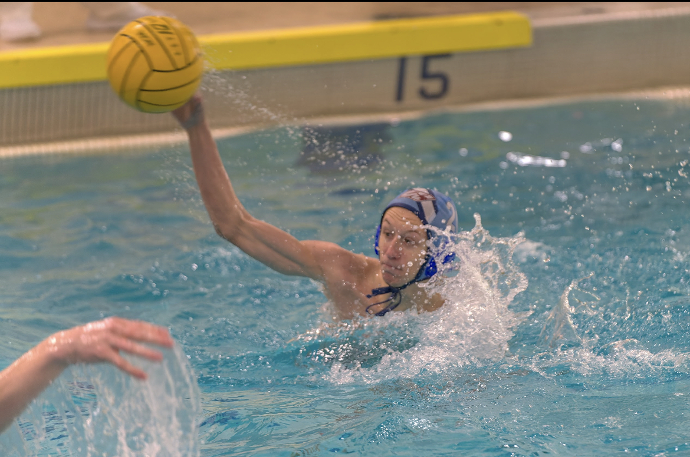

Welcome!

Hello, my name is Nicholas Rugani, or just Nico. I am an aspiring software developer out of Ballwin Missouri. I started Coding in 2023 through a program called Web and Computer programming at a technical high school called South Tech High School. Before South Tech I had an interest in computers and had already built several of my own. Throughout my time at South Tech, I've developed skills in many different programming languages, including:
- HTML & CSS
- Javascript
- Python
- Java
- C#
Currently I am also in the process of teaching myself SwiftUI using various tools on the internet.
If you would like to learn more about me, my projects, goals, or if you would like to contact me please continute to explore the rest of my site!
Interests
Computers!
As you may have guessed one of my intrests is computer science. although I am primarily a software developer I do still enjoy learning about all types of aspects of computer science. Wether that be data bases, cyber security, and everything in between its all at least a little interesting to me.
Sports
Currently in high school, I play water polo and I dive. I also have a history of playing lacrosse. Although I don't currently play I still love the game and find myself watching pro and college games all the time.  Another one of the sports I play is pickle ball. My friends and I picked up pickle ball origonally for just something to do on the weekends but it has quickly spiraled into a very competative leauge within our friend group.
Friends
Spending time with friends is one of the most important things to me. I value all my friendsships greatly and the bonds I've been able to form throughout my years has positivly impacted me for the rest of my life.